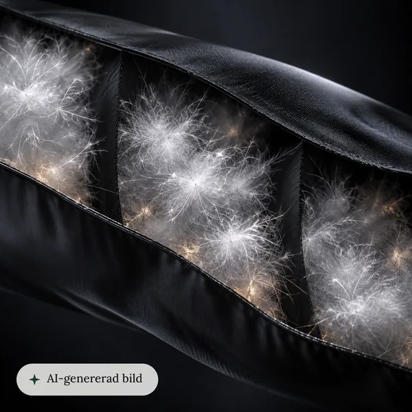
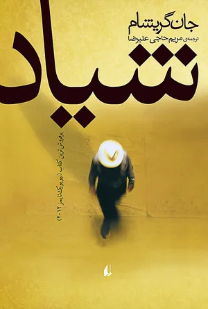
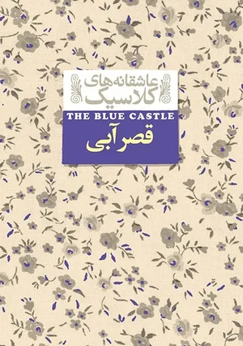
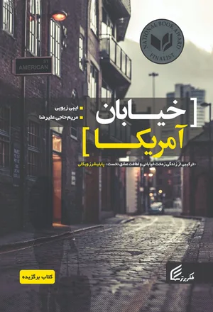

Content
A designer who also
creates content.
I’m a UX/UI designer first. But words and images were my first tools: I wrote SMS copy and SEO articles, and translated three books. Today I create with AI every day, for research, prototypes and images, and I label AI images clearly.
01Three samples
-

AI imagery · Haglöfs
Labelled AI close-up
I generated this material close-up with AI for a product page, and designed the label so shoppers know it’s AI from the first view.
See the case study -


Photography
Small moments
Family photography in Stockholm. I look for the unposed details, the same attention I bring to user research.
See the photobook -



Writing · Translation
Three translated books
I translated novels by John Grisham, L.M. Montgomery and Ibi Zoboi from English to Persian. It taught me that every word matters, in a book or in a button.
Published as Maryam Hajialireza
02How I use AI
AI speeds me up.
People decide.
Research
Claude and ChatGPT help me plan research and cluster findings.
Prototyping
Fast mockups and prototypes. This site was designed in Figma and coded with Claude.
Images
Image work in Magnific, always labelled when it’s AI-generated.